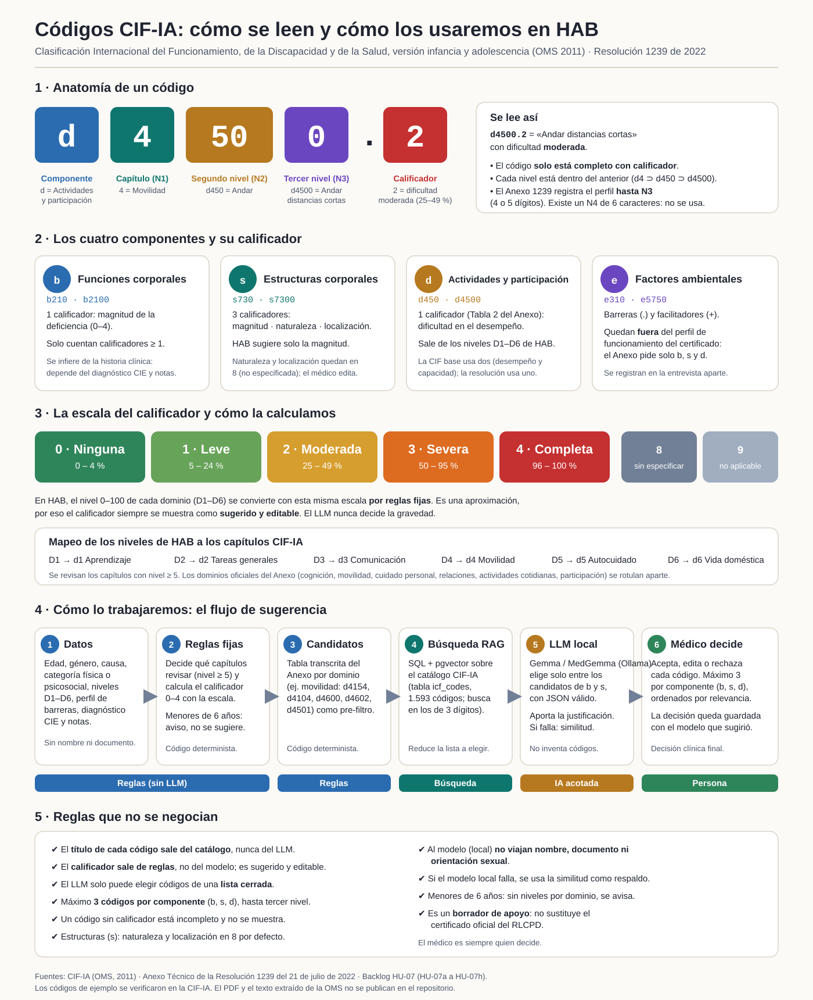

Health Access Bridge
Plataforma web para que los médicos gestionen pacientes con discapacidad en zonas rurales de Colombia, predigan su perfil de barreras de acceso a la salud (modelo de ML) y documenten su perfil funcional ICF con ayuda de una IA que corre en infraestructura propia, sin enviar datos clínicos a terceros.
Esta página resume el estado del proyecto en seis vistas: Producto (qué hace y cómo está armado), Proceso (sprints y métricas), Calidad (pruebas y defectos), IA y validación ICF (el motor y su validación con una profesional de salud), Usuarios (investigación HCI) y Documentos.
El proyecto en 30 segundos
Cuatro preguntas, una respuesta corta cada una. Toque una tarjeta para ver el detalle.
Avance por Momento
Tres entregas integradoras en 27 semanas, 146 puntos de historia.
Cierre del proyecto
Lo último que se entregó y las recomendaciones que quedan abiertas para quien siga el proyecto.
18 escenarios de aceptación (18/18), accesibilidad WCAG 2.2 AA sin violaciones en 14 pantallas y sesión de usabilidad con 10 usuarios (SUS 81,25).
Despliegue verificado en los tres ambientes, manuales de usuario, técnico y del servicio ICF (con capturas y diagramas), documentación final con la guía de la profesora e Insights Report 6.
Calificador del perfil con rango 0–4, apagar ICF_MENTAL_LINK, una cuarta ronda de validación con casos nuevos y más pruebas con usuarios. No se hicieron por tiempo: segunda revisora, revisión con lectores de pantalla, lint y tipos en el CI, consulta regulatoria y permiso de la OMS.
Producto
Qué problema resuelve, qué se entregó y cómo está armado.
Contexto y problema
¿Por qué existe Health Access Bridge?
El Problema
Las personas con discapacidad en zonas rurales de Colombia enfrentan barreras de acceso al sistema de salud que no son identificadas ni sistematizadas eficientemente.
La Solución
Plataforma web con IA que permite a médicos registrar pacientes, ejecutar predicciones de perfiles de barreras (Baja/Moderada/Alta) y consultar guías de intervención.
El Impacto
Modelo HybridModelDisability (K-Means + Gradient Boosting) clasifica perfiles usando dimensiones CIF D1-D6 para priorización clínica en campo.
Funcionalidades entregadas
Qué hace cada rol
Dos roles con permisos distintos (RBAC con JWT).
- Registra, edita y busca sus pacientes; exporta a Excel y PDF
- Ejecuta la predicción de barreras (Perfil 0/1/2)
- Genera el perfil funcional ICF: acepta, edita o rechaza cada código sugerido; copia o descarga el reporte
- Consulta el dashboard de análisis de sus pacientes y lo exporta (Excel y PDF)
- Usa la guía predictiva y el centro de ayuda (ES/EN)
- Crea usuarios (médico o admin) y los activa o desactiva
- Supervisa a todos los pacientes (acceso de lectura y edición)
- Ve el dashboard de análisis global y puede filtrarlo por médico (HU-08)
- No hay datos identificables en los agregados del dashboard ni en sus exportaciones
Pantallas de diseño8 mockups de alta fidelidad (haga clic en una imagen para ampliarla)


Arquitectura y stackFrontend, backend, base de datos, servicio ICF y los diagramas C4
bge-m3 · LLM local gemma4:e4b (Ollama) · túnel autenticado con tokenDiagrama del stack y del flujoDiagrama general
Arquitectura del Sistema
Flujo completo desde el usuario hasta la infraestructura cloud y el servidor físico con LLM para interpretación CIF
Modelo C4 (6 diagramas interactivos)Contexto, contenedores, componentes, código y despliegue
Ambientes de despliegueDEV, QA y producción en Render; HU-08 está activa en los tres
masterCredenciales de prueba (todos los ambientes)
Proceso y sprints
Cómo se organizó el trabajo, cuánto se entregó por sprint y qué dicen las métricas del repositorio.
Seguimiento de sprints
Story Points entregados por sprint. El Sprint 4-5 se adelantó al Sprint 3 (HU-04), por eso no suma dos veces.
| Sprint | Semanas | Alcance | SP | Avance | Estado |
|---|
Velocity y burndown
Izquierda: puntos completados por sprint. Derecha: puntos que faltan para los 146 del proyecto.
Velocity por sprint
Sprint 8-9: HU-07 (33 pts) y HU-08 (13 pts, adelantada desde el Sprint 10-11). Sprint 4-5 en morado: HU-04 se entregó antes, en el Sprint 3.
Burndown del proyecto
Real al 26-oct-2026: 133 completados, 13 restantes. La línea verde es el plan restante (HU-09 en el Sprint 11 y HU-10 en el 12).
Roadmap por Momento
Qué entró en cada entrega y en qué estado está.
Detalle de cada sprintTarjetas con alcance, decisiones y resultados
- • DEUDA-01: prueba de carga repetida a 30 VUs (límite del pool), causa raíz refinada (CPU/bcrypt) — cerrada, riesgo aceptado
- • Flujo de PR + protección de rama activado y validado en develop/staging/master (#18, #19)
- • Check de CI para sincronía de package-lock.json en los 3 workflows
- • Sincronización de ramas develop/staging con master (divergencia de meses corregida)
- • Bug 5 (24-sep): flakiness intermitente en E2E por `OnboardingModal` compitiendo por `role="dialog"` — corregido y validado con 2 corridas limpias consecutivas en CI (7/7 specs)
- • HU-07: servidor propio y catálogo CIF-IA (1.593 códigos); Qwen 3B descartado (24–46 s, peor que la similitud);
gemma4:e4ben el PC de producción (~2 s) - • HU-07g: validación con una profesional de salud en 3 rondas; 5 de 6 criterios en casos nuevos (el calificador no cumple); se acreditan los 3 pts
- • HU-08: dashboard con 10 gráficos, filtros y exportación a Excel y PDF; backend
/analytics; verificada en DEV, QA y producción - • Pruebas nuevas: 18 backend, 23 frontend y 5 E2E (HU-08); hallazgos: PDF de 19 MB → 220 KB y género duplicado
- • Aceptación: 18 escenarios por rol contra DEV, 18/18; guion automatizado con evidencias
- • Accesibilidad: axe-core WCAG 2.2 AA en 14 pantallas; 7 grupos de violaciones corregidos, 0 al cierre
- • Usabilidad: 10 participantes (5 médicos, 5 administradores), SUS medio 81,25 (72,5–90); 2 hallazgos atendidos con una guía de calificadores
Métricas del repositorio
Distribución de lenguajes
Actividad del repositorio
Prácticas ágiles (SCRUM)Roles, eventos y artefactos con su evidencia en el repositorio
Roles
- • Product Owner: prioriza y redacta HUs en BACKLOG.md
- • Dev Team: equipo unipersonal, assignee único en GitHub
- • Stakeholders: médicos entrevistados (docs/HCI/)
Eventos
- • Planning: HU estimada en SP antes del sprint
- • Review: HU demostrada desplegada en dev/qa/prod
- • Retro: hallazgos y fixes documentados por cierre de Momento
Artefactos
- • Product Backlog: BACKLOG.md (épicas, HUs, DoD, DoR)
- • Incremento: 3 ambientes live + smoke tests
- • Release Plan: RELEASE_PLAN.md por Momento
Flujo CI/CDDe git push al despliegue, con la aprobación manual en producción
Ramas, Pull Requests y GitHub Actions
Cada rama exige Pull Request + checks de CI en verde antes de mergear (branch protection, sin excepción salvo bypass explícito de admin)
Calidad
Qué se prueba, cuánto cubre, qué defectos se encontraron y cómo se corrigieron.
Pruebas automáticas
Pruebas por capa
Cobertura y calidad del código
hab-frontend-dev.Accesibilidad y aceptación (HU-09)
Pruebas en un navegador real contra el ambiente desplegado, más una sesión con usuarios. Reporte: docs/reports/REPORTE_FINAL_PRUEBAS_HU09.md.
Límites: n = 10 estima el SUS de forma gruesa; solo se observó la tarea del perfil ICF; axe-core no sustituye la revisión con lectores de pantalla.
Pipeline de calidad
Cada push a develop, staging o master corre este flujo; producción exige aprobación manual.
Defectos y hallazgos corregidos
Cada hallazgo salió de una prueba o de una verificación real, y quedó corregido con evidencia.
| Cuándo | Hallazgo | Cómo se detectó | Resolución |
|---|
Calidad de la IA (validación clínica)
Una profesional de salud midió las sugerencias del motor en tres rondas. Las cifras completas, el método y las fuentes están en la vista .
| Criterio | Meta | Ronda 1 | Ronda 2 | Ronda 3 (casos nuevos) |
|---|---|---|---|---|
| Precisión estricta b+s | 0,60 | 0,591 | 0,710 | 0,627 ✅ |
| Precisión flexible b+s | 0,80 | 0,788 | 0,871 | 0,863 ✅ |
| Cobertura a ciegas b+s | 0,60 | 0,552 | 0,582 | 0,690 ✅ |
| Calificador (κ ponderado) | 0,50 | 0,576 | 0,540 | 0,312 ❌ |
| Actividades (d) flexible | 0,80 | 1,000 | 1,000 | 1,000 ✅ |
Veredicto: NO CUMPLE por un solo criterio (el calificador). Se presenta como borrador de apoyo con calificador editable; no se aprueba uso clínico.
Casos de prueba
Casos Gherkin de las suites 1 a 7 (Momento 1) y las suites 8 a 12 de los Momentos 2 y 3 en el reporte completo.
| Suite | HU | Archivos | Pruebas |
|---|---|---|---|
| 1–3 Smoke y backend (auth, pacientes) | HU-11, HU-12 | test_auth, test_patients | 37 |
| 4–7 Frontend (AuthContext, Login, Layout, Pacientes) | HU-13 | *.test.tsx | 16 |
| 8 Servicio ICF (motor RAG, reglas, validación) | HU-07a/b/f/g | icf-service/tests | 101 |
| 9 Backend ICF (sugerencias, decisiones, causas) | HU-07c | test_icf_* | 53 |
| 10 Frontend ICF (perfil funcional y guía) | HU-07d | FunctionalProfile, IcfGuide | 22 |
| 11 E2E del perfil funcional ICF | HU-07e | functional-profile.spec | 5 |
| 12 Dashboard de análisis (nuevo) | HU-08 | test_analytics, Analytics.test, analyticsExport.test, analytics.spec | 46 |
Casos Gherkin y matriz de trazabilidad (suites 1 a 7)Escenarios Dado/Cuando/Entonces por suite
HU-11
Smoke Tests en Producción
ci-prod.yml · 2 escenarios
✅ 2/2▶
Feature: Smoke Tests de Producción Background: Given el pipeline ejecutó un despliegue exitoso en Render producción And han transcurrido al menos 90 segundos desde el inicio del contenedor Scenario: TC-S01 — Health check responde HTTP 200 Given el endpoint GET /health está expuesto When el job smoke test realiza GET /health Then la respuesta tiene código 200 And el servicio se considera operativo Scenario: TC-S02 — Endpoint de login es alcanzable Given el endpoint POST /users/login está expuesto When el job smoke test realiza POST /users/login sin credenciales Then la respuesta tiene código 200, 401 o 422 (no 5xx) And el pipeline continúa si todos los checks pasan
HU-12
Backend — Autenticación y RBAC
test_auth.py · 18 escenarios
✅ 18/18▶
Feature: Endpoints del Sistema (Health) Scenario: TC-B01 — Health check retorna HTTP 200 When GET /health Then código 200 Scenario: TC-B02 — Root endpoint retorna HTTP 200 When GET / Then código 200 Feature: Login de Usuarios Background: Given existen admin@test.com (admin) y medico@test.com (médico) Scenario: TC-B03 — Login exitoso como Administrador When POST /users/login {username: admin@test.com, password: adminpass123} Then código 200, body contiene access_token y token_type: bearer Scenario: TC-B04 — Login exitoso como Médico When POST /users/login {username: medico@test.com, password: medicopass123} Then código 200, body contiene access_token Scenario: TC-B05 — Login con contraseña incorrecta When POST /users/login {password: wrongpass} Then código 401 Scenario: TC-B06 — Login con usuario inexistente When POST /users/login {username: noexiste@test.com} Then código 401 Scenario: TC-B07 — Login sin campos requeridos When POST /users/login con body vacío {} Then código 422 con errores de validación Feature: Perfil del Usuario Autenticado (GET /users/me) Scenario: TC-B08 — Obtener perfil con token válido Given header Authorization: Bearer {token_medico} When GET /users/me Then código 200, email=medico@test.com, role=médico Scenario: TC-B09 — Sin token es rechazado When GET /users/me sin Authorization Then código 401 Scenario: TC-B10 — Token inválido es rechazado When GET /users/me con Bearer token_invalido Then código 401 Feature: Gestión de Usuarios — Admin Endpoints Scenario: TC-B11 — Admin lista usuarios When GET /admin/users con token admin Then código 200, body es lista JSON Scenario: TC-B12 — Médico no puede listar usuarios (403) When GET /admin/users con token médico Then código 403 Scenario: TC-B13 — Sin auth no puede listar usuarios When GET /admin/users sin Authorization Then código 401 Scenario: TC-B14 — Admin registra nuevo usuario When POST /admin/users/register {email, password, full_name, role} Then código 200/201, body.email = nuevo_medico@test.com Scenario: TC-B15 — Email duplicado es rechazado When POST /admin/users/register con email ya existente Then código 400 Scenario: TC-B16 — Médico no puede registrar usuarios (403) When POST /admin/users/register con token médico Then código 403 Scenario: TC-B17 — Admin desactiva y reactiva usuario When PATCH /admin/users/{id}/status {is_active: false} Then código 200, is_active=false When PATCH /admin/users/{id}/status {is_active: true} Then código 200, is_active=true Scenario: TC-B18 — Toggle usuario inexistente retorna 404 When PATCH /admin/users/99999/status Then código 404
HU-12
Backend — Gestión de Pacientes
test_patients.py · 17 escenarios
✅ 17/17▶
Feature: Control de Acceso a Pacientes Scenario: TC-B19 — Sin autenticación: 401 When GET /patients/ sin Authorization Then código 401 Scenario: TC-B20 — Admin no puede listar pacientes (403) When GET /patients/ con token admin Then código 403 Scenario: TC-B21 — Crear paciente sin autenticación: 401 When POST /patients/ sin Authorization Then código 401 Feature: CRUD Completo de Pacientes Background: Given médico autenticado con token JWT válido Scenario: TC-B22 — Crear paciente When POST /patients/ con payload válido Then código 200/201, body.id generado, nombre y documento correctos Scenario: TC-B23 — Listar pacientes propios When GET /patients/ Then código 200, body es lista JSON Scenario: TC-B24 — Aislamiento: médico solo ve sus pacientes Given segundo médico sin pacientes registrados When segundo médico hace GET /patients/ Then código 200, body = [] Scenario: TC-B25 — Obtener paciente por ID Given paciente creado con {patient_id} When GET /patients/{patient_id} Then código 200, body.id = {patient_id} Scenario: TC-B26 — Paciente inexistente retorna 404 When GET /patients/99999 Then código 404 Scenario: TC-B27 — Actualizar historia clínica When PUT /patients/{id} con nombre_apellidos actualizado Then código 200, body.nombre_apellidos = "Juan Pérez Actualizado" Scenario: TC-B28 — Soft delete de paciente When DELETE /patients/{id} Then código 200 And GET /patients/{id} retorna 404 Scenario: TC-B29 — Eliminar inexistente retorna 404 When DELETE /patients/99999 Then código 404 Feature: Búsqueda de Pacientes Scenario: TC-B30 — Buscar por nombre When GET /patients/?search=María López Then código 200, resultado contiene paciente con "María" en nombre Scenario: TC-B31 — Buscar por número de documento When GET /patients/?search=3001112222 Then código 200, resultado contiene numero_documento=3001112222 Scenario: TC-B32 — Sin resultados retorna lista vacía When GET /patients/?search=xyzNoExiste999 Then código 200, body = [] Scenario: TC-B33 — Query vacío retorna todos los pacientes When GET /patients/ y GET /patients/?search= Then ambos retornan el mismo número de pacientes Feature: Propiedad y Aislamiento entre Médicos Scenario: TC-B35 — Médico no accede al paciente de otro médico Given médico A creó paciente {patient_id} When médico B hace GET /patients/{patient_id} Then código 404 (aislamiento RBAC por owner_id)
HU-13
Frontend — AuthContext
AuthContext.test.tsx · 4 escenarios
✅ 4/4▶
Feature: Contexto de Autenticación (AuthContext) Background: Given AuthProvider envuelve la app en MemoryRouter And apiService está mockeado (login, getCurrentUser, setToken, clearToken) And localStorage está limpio antes de cada test Scenario: TC-F01 — Estado inicial sin sesión activa Given no existe token ni usuario en localStorage When se renderiza useAuth() y isLoading resuelve a false Then user debe ser null Scenario: TC-F02 — Login almacena usuario en estado y localStorage Given apiService.login responde {access_token: "test-token"} And apiService.getCurrentUser responde {email: "admin@hab.co", role: "admin"} When se llama login("admin@hab.co", "adminpassword") Then user.email = "admin@hab.co" And localStorage contiene la clave "user" Scenario: TC-F03 — Logout limpia estado y localStorage Given localStorage tiene authToken y user de sesión activa When se llama logout() Then user = null And localStorage no contiene authToken ni user Scenario: TC-F04 — Credenciales inválidas no actualizan estado Given apiService.login lanza Error("Unauthorized") When se llama login("bad@email.com", "wrongpassword") Then la función lanza excepción And user permanece null
HU-13
Frontend — Login · DashboardLayout · Pacientes UI
3 archivos · 12 escenarios
✅ 12/12▶
Feature: Página de Login Background: Given Login renderizado en MemoryRouter And useAuth: {user: null, isLoading: false} And useLanguage: {language: "en", t: key => key} Scenario: TC-F05 — Muestra campos email y password When Login se monta Then existen input#email e input#password en el DOM Scenario: TC-F06 — Botón se deshabilita durante login en vuelo Given login devuelve Promise que nunca resuelve When usuario ingresa credenciales y hace clic en submit Then el botón muestra estado "loading" y está disabled Scenario: TC-F07 — Usuario autenticado no ve el formulario Given useAuth devuelve user con email "doc@hab.co" When Login se monta Then el elemento form no está en el DOM Scenario: TC-F08 — Header contiene botón de idioma When Login se monta Then existen al menos 2 botones (language toggle + submit) Feature: Layout Protegido del Dashboard Scenario: TC-F09 — Muestra spinner mientras autenticación resuelve Given useAuth: {user: null, isLoading: true} When DashboardLayout se monta Then existe elemento con clase animate-spin en el DOM Scenario: TC-F10 — Redirige usuario no autenticado a /login Given useAuth: {user: null, isLoading: false} And usuario navega a /dashboard When DashboardLayout evalúa autenticación Then renderiza componente de /login (data-testid="login-page") Scenario: TC-F11 — Autenticado ve contenido protegido (outlet) Given useAuth: {user: {role: "médico"}} When usuario navega a /dashboard Then renderiza data-testid="protected-content" Scenario: TC-F12 — Sidebar: "userList" solo para admin Given items: dashboard, patients, predictions, analytics, predictiveGuide, userList When filtro para rol "admin" Then contiene userList, NO contiene patients/predictions/analytics When filtro para rol "médico" Then contiene patients, NO contiene userList Feature: Gestión de Pacientes — Interfaz de Usuario Background: Given Patients renderizado, médico autenticado, patientService mockeado Scenario: TC-F13 — Muestra campo de búsqueda Given getPatients resuelve con [] When componente carga Then existe input con placeholder "search" Scenario: TC-F14 — Estado vacío cuando no hay pacientes Given getPatients resuelve con [] When lista se renderiza Then existe texto "noPatientsYet" en el DOM Scenario: TC-F15 — Botón "Agregar" abre diálogo de creación When clic en botón "addPatient" Then existe elemento con role="dialog" en el DOM Scenario: TC-F16 — Ícono eliminar activa AlertDialog de confirmación Given getPatients resuelve con [{nombre: "Juan Pérez", id: 1}] When clic en botón ícono (SVG, sin texto) de eliminar Then existe elemento con role="alertdialog" en el DOM
Matriz de Trazabilidad
| Código | HU | Archivo | Descripción | Estado |
|---|---|---|---|---|
| TC-S01 | HU-11 | ci-prod.yml | GET /health → 200 post-deploy | ✅ |
| TC-S02 | HU-11 | ci-prod.yml | POST /login alcanzable (no 5xx) | ✅ |
| TC-B01 | HU-12 | test_auth.py | Health check HTTP 200 | ✅ |
| TC-B02 | HU-12 | test_auth.py | Root endpoint HTTP 200 | ✅ |
| TC-B03 | HU-12 | test_auth.py | Login admin exitoso → token JWT | ✅ |
| TC-B04 | HU-12 | test_auth.py | Login médico exitoso → token JWT | ✅ |
| TC-B05 | HU-12 | test_auth.py | Contraseña incorrecta → 401 | ✅ |
| TC-B06 | HU-12 | test_auth.py | Usuario inexistente → 401 | ✅ |
| TC-B07 | HU-12 | test_auth.py | Body vacío → 422 | ✅ |
| TC-B08–10 | HU-12 | test_auth.py | GET /users/me: auth / sin auth / token inválido | ✅ |
| TC-B11–18 | HU-12 | test_auth.py | Admin endpoints: listar / registrar / toggle usuarios | ✅ |
| TC-B19–21 | HU-12 | test_patients.py | Control de acceso a pacientes (401/403) | ✅ |
| TC-B22–29 | HU-12 | test_patients.py | CRUD completo + aislamiento por médico | ✅ |
| TC-B30–33 | HU-12 | test_patients.py | Búsqueda por nombre, documento, vacío | ✅ |
| TC-B35 | HU-12 | test_patients.py | Médico no accede a paciente de otro médico | ✅ |
| TC-F01–04 | HU-13 | AuthContext.test.tsx | Estado inicial · login · logout · inválido | ✅ |
| TC-F05–08 | HU-13 | Login.test.tsx | Campos DOM · loading · redirect · idioma | ✅ |
| TC-F09–12 | HU-13 | DashboardLayout.test.tsx | Spinner · redirect · outlet · sidebar RBAC | ✅ |
| TC-F13–16 | HU-13 | Patients.test.tsx | Búsqueda · empty state · dialog · alertdialog | ✅ |
IA y validación ICF
Cómo funciona el perfil funcional ICF, qué modelo lo asiste y cómo se validó con una profesional de salud.
Cómo funciona el perfil funcional ICF
RAG (recuperación + selección) sobre el catálogo CIF-IA, sin fine-tuning. El modelo solo puede elegir entre códigos que ya existen en el catálogo.
- 1 · Datos del casoNiveles D1–D6, categorías física y psicosocial, diagnóstico CIE y notas. Nunca viajan nombre, documento ni orientación sexual.
- 2 · Reglas fijasLos dominios D1–D6 se mapean a capítulos de actividades (d) del Anexo 1239; el calificador sale de reglas, no del modelo.
- 3 · BúsquedaEmbeddings
bge-m3y pgvector traen los códigos de funciones (b) y estructuras (s) más cercanos al caso. - 4 · Selección
gemma4:e4belige hasta 3 por componente (salida JSON de lista cerrada); si falla, se usa la similitud. - 5 · Decisión médicaEl médico acepta, edita o rechaza cada código; queda guardado con el modelo que lo sugirió. Es un borrador de apoyo.
Modelo local y privacidad
Se descartaron las APIs externas por privacidad (Ley 1581 de 2012); todo corre en infraestructura propia.
| Opción | Resultado medido | Decisión |
|---|---|---|
| qwen2.5:3b (servidor i3, sin GPU) | 24–46 s por sugerencia y peor selección que la similitud sola (0,6 s) | Descartado |
| medgemma:4b | Sus términos prohíben el uso clínico | Descartado (licencia) |
| gemma4:e4b (Apache 2.0) | ~2 s por sugerencia con GPU de 8 GB; 0 USD en APIs; ~0,042 Wh por sugerencia | En producción (PC propio) |
| gemma4:12b a 31b | No se midieron: los datos indicaban que el límite estaba en la búsqueda y en la instrucción, no en la capacidad | No probados |
Afinamiento de los códigos ICF y validación clínica
Reporte final de la fase de HU-07g (26 de octubre de 2026): tres rondas con una profesional de salud, correcciones al motor sin cambiar de modelo y 24 casos nuevos medidos con reglas fijadas antes de ver las sugerencias.
| Criterio | R1 | R2 | R3 (nuevos) | Meta |
|---|---|---|---|---|
| Precisión estricta | 0,591 | 0,710 | 0,627 | 0,60 |
| Precisión flexible | 0,788 | 0,871 | 0,863 | 0,80 |
| Cobertura a ciegas | 0,552 | 0,582 | 0,690 | 0,60 |
| Calificador (κ pond.) | 0,576 | 0,540 | 0,312 | 0,50 |
| Actividades (d) flexible | 1,000 | 1,000 | 1,000 | 0,80 |
R1 y R2: casos C01–C25 (R2 con el motor corregido). R3: 24 casos nuevos N01–N24. IC 95 % de la R3: estricta 0,531–0,715; flexible 0,783–0,916; cobertura 0,562–0,794; κ 0,123–0,500. Veredicto: NO CUMPLE por un solo criterio.
En estructuras el modelo completaba la cuota de 3 códigos (la 2.ª y la 3.ª solo eran «Adecuado/Aceptable» en el 57 % y el 38 %); en funciones la búsqueda traía 18 de los 39 códigos que la médica elegía (faltaban fuerza, control del movimiento y marcha).
Estructuras solo con evidencia en el caso y un vínculo de movilidad acotado a limitación motora grave. Sin cambiar de modelo (gemma4:e4b) y a ~2 s por sugerencia. Ampliar candidatos no ayudó; el vínculo mental fue un error de diseño propio.
El calificador del sistema solo usa 2 y 3 y la médica usa 2, 3 y 4 (queda un nivel por debajo en 21 de 40 pares). Es un borrador de apoyo con calificador editable; no se aprueba uso clínico. Recomendado: segunda revisora y una cuarta ronda.
Códigos CIF usados por el sistemaEstructura de la clasificación y ejemplos

Usuarios y usabilidad (HCI)
Investigación con usuarios reales y las mejoras de usabilidad que salieron de ella (HU-05).
Plan de Investigación
Objetivo, método, criterios de selección, cronograma · ISO 9241-210
Guías de Entrevista
Perfil clínico + perfil no clínico (SST, Alcaldía, ICBF) · 4 bloques · SUS
Consentimiento Informado
Formato firmable · HABEAS DATA · Ley 1581/2012 · CORHUILA
Fichas de Entrevistas
3 fichas diligenciadas con SUS por participante y síntesis comparativa
2 personas derivadas
45 HU · 3 releases
Usabilidad percibida
Informes completos: informe HCI · evaluación heurística · portal HCI. La validación de usabilidad con usuarios finales de HU-09 todavía está pendiente.
Documentos
Todos los informes, protocolos, manuales y diagramas del proyecto, con buscador y filtros.